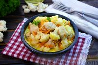

Курица, тушенная с цветной капустой в сливочном соусе, – удачное сочетание ингредиентов с тонким вкусом. Куриное филе отлично дружит с цветной капустой, лук и морковь добавляют лёгкую сладковатую нотку, и всё отлично дополняется нежнейшим сливочным соусом. Сочно и бесподобно вкусно!